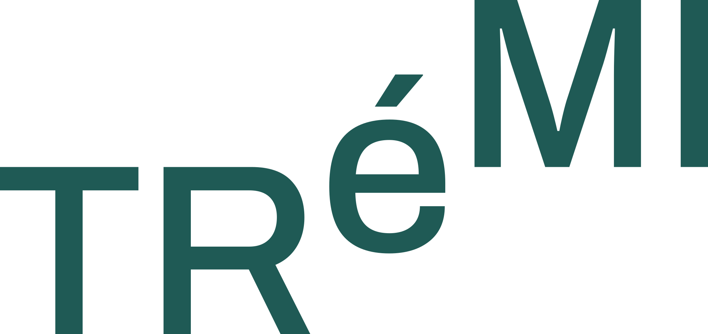
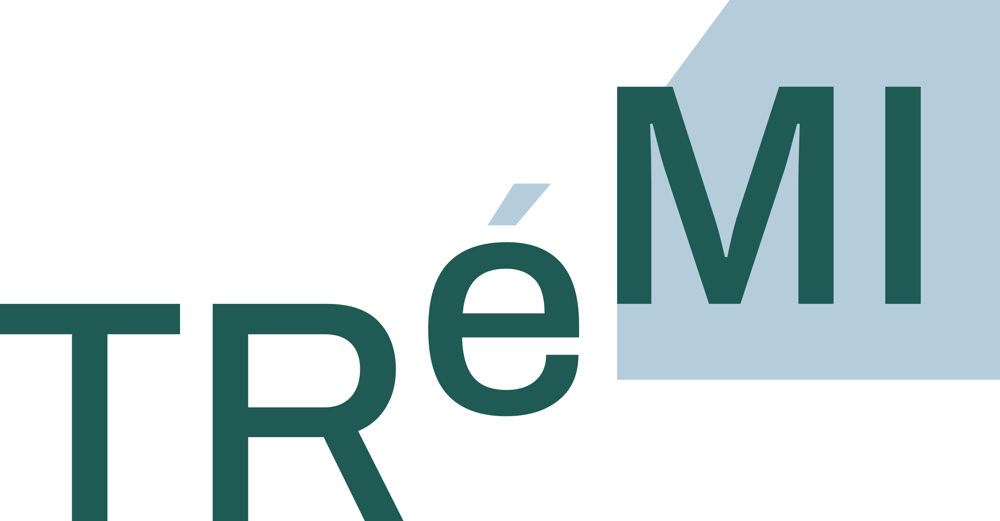

Créer.
Oser expérimenter, faire des images et donner forme à ses idées. L’envie compte plus que le matériel.

Photo · Vidéo · Création collective
Un collectif à taille humaine pour pratiquer, partager ses regards et aller plus loin, ensemble.
Découvrir TRéMI
TRéMI réunit des personnes qui aiment la photographie, la vidéo et la création d’images. On y vient pour faire, tester, apprendre, transmettre — et parfois recommencer.
Notre nom vient de la trémie : une ouverture qui permet de passer d’un niveau à l’autre. Une façon de dire que l’on progresse aussi grâce aux autres.
Oser expérimenter, faire des images et donner forme à ses idées. L’envie compte plus que le matériel.
Partager un savoir-faire, une question ou un regard. Chacun a quelque chose à apprendre et à apporter.
Se challenger avec bienveillance et exigence, sans compétition ni hiérarchie entre les personnes.
Les formats que nous préparons
Des rencontres pour échanger, des sorties pour regarder autrement et des ateliers pour essayer.
Se rencontrer autour d’images, partager ses questions et croiser les regards dans un cadre convivial.
Explorer un lieu, expérimenter un thème et découvrir comment chacun le raconte. Smartphone ou appareil : tous les outils ont leur place.
Travailler la lumière, le portrait, le cadrage ou l’image en mouvement. Apprendre en faisant, avec l’aide du groupe.
Faire grandir une idée à plusieurs : défis créatifs, séries d’images, réalisations vidéo ou expositions.
Un format à inventer, une envie à partager, un savoir-faire à transmettre : les membres peuvent proposer de nouveaux rendez-vous et les construire avec le collectif.
La programmation se construit. Dates, lieux et modalités seront annoncés une fois confirmés.
Une place pour chaque regard
Pas besoin du dernier appareil ni d’un portfolio pour échanger avec nous. Débutants et personnes expérimentées ont leur place, avec un smartphone, un compact, un argentique, un hybride ou une caméra.
03 / Faisons connaissance
Envie de participer, de proposer une idée ou de partager un savoir-faire ? Écris-nous.
Roubaix & métropole lilloise
Les lieux de rendez-vous seront précisés pour chaque activité.